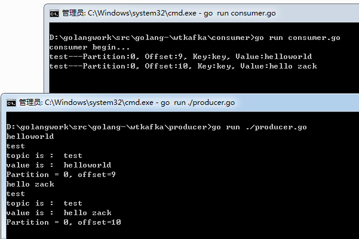
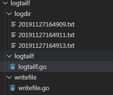
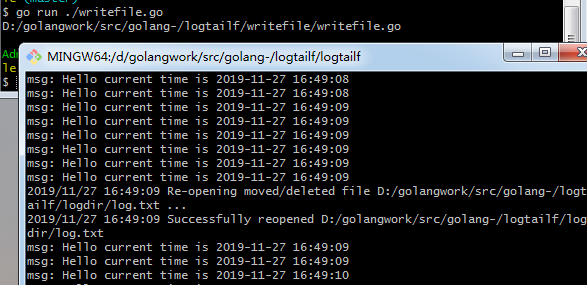
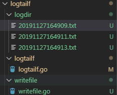

日志统计系统的整体思路就是监控各个文件夹下的日志，实时获取日志写入内容并写入kafka队列，写入kafka队列可以在高并发时排队，而且达到了逻辑解耦合的目的。然后从kafka队列中读出数据，根据实际需求显示网页上或者控制台等。
前情提要
上一节我们完成了如下目标
1 配置kafka，并启动消息队列。
2 编写代码向kafka录入消息，并且从kafka读取消息。
本节目标
1 写代码从kafka中读取消息，保证kafka消息读写功能无误。
2 借助tailf实现文件监控，并模拟测试事实写文件以及文件备份时功能无误。
3 本系列文章开发语言使用Go
从kafka中读取消息
1 | func main(){ |
这样我们启动zookeeper和kafka后，分别运行前文实现的向kafka中写入数据的代码，以及现在的从kafka中消费的代码，看到如下效果

实现文件监控
实现文件监控，主要是在文件中有内容写入时，程序可以及时获取写入的内容，类似于Linux命令中的tailf -f 某个文件的功能。
golang 中提供了tail库，我们借助这个库完成指定文件的监控，我的文件组织如下

logdir文件夹下的log.txt记录的是不断增加的日志文件
tailf文件夹下logtailf.go实现log.txt监控功能。
writefile文件夹下writefile.go实现的是向log.txt文件写日志并备份的功能。
1 | func main() { |
为了测试监控的功能。我们实现向log.txt中每隔0.1s写入一行”Hello+时间戳”的日志。当写入20条内容后我们将log.txt备份重命名。
然后创建新的log.txt继续写入。
在writefile.go实现一个函数定时写入，并且备份功能
1 | func writeLog(datapath string) { |
然后我们实现main函数，调用三次writeLog，这样会产生三个备份文件
1 | func main() { |
我们分别启动文件监控和文件写入程序，效果如下

可以看到,当log.txt有内容写入时，logtailf.go实现了动态监控，而且当文件备份时，logtailf.go提示了文件被重命名备份。
最终我们看到产生三个备份文件

总结
目前我们已经完成了kafka消息读写，文件监控，动态写入和备份等功能，接下来我们实现项目的配置化和统筹代码。
源码下载
https://github.com/secondtonone1/golang-
感谢关注我的公众号